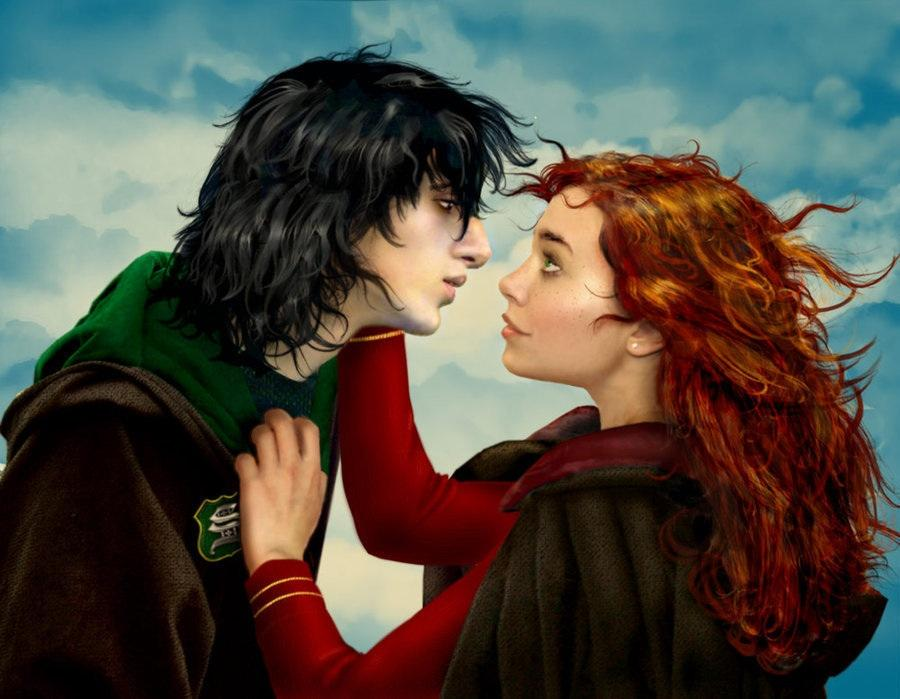
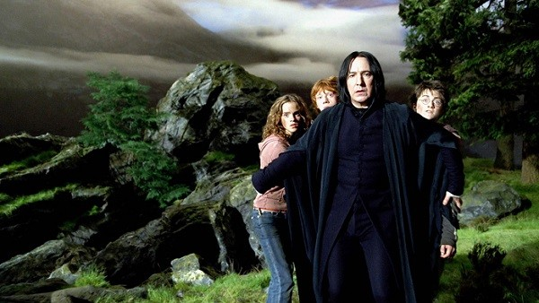

--------Know more about Snape--------
Severus Snape is a Professor at Hogwarts school of Witchcraft and Wizardry. He is an exceptionally skilful wizard whose coldly sarcastic and controlled exterior conceals deep emotions and anguish. We may think Snape has the smallest capacity to love, but he turns out to be the one who loves the most, that is his brillance. He is the person who taught us what True love is; A person who loved his love from childhood and even after her death until the end of his own life....
Severus snape and Lily Evans Potter
-----Snape's Traits-----
- He is a visionary
- He is logical
- He is brave
- He is sensible
- He is a critical thinker
-----Snape's People-----
Even though he was an introvert, he was loyal to the people he loved. He was hostile to Harry, the son of his love(Lily); still he secetly cared for him. Click the link below to know more about the people who where around him.
- Harry Potter
- Lily Evans Potter
- Hermione Granger
- Ron Weasley

Severus Snape, Harry Potter and his friends...